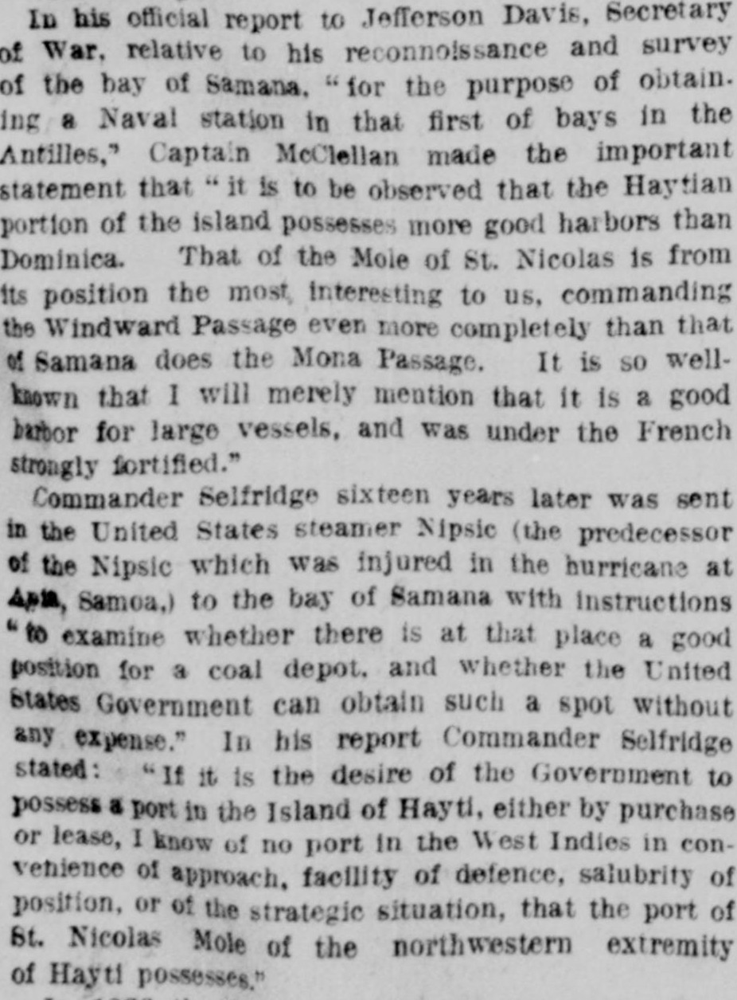
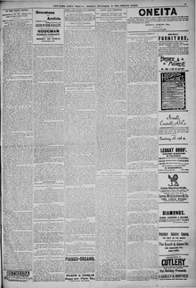

Commander Selfridge sixteen years later was sent in the United StatesEl comandante Selfridge, dieciséis años después, fue enviado en el buque de los Estados Unidos
New-York Tribune. New York [N.Y.], December 16, 1889. Page 3. View the originalVer el original


See the full pageVer la página completaCommander Selfridge reported to the United States Government regarding potential coal depot locations in the West Indies, noting that the port of Mole St. Nicholas at the northwestern extremity of Hayti was strategically superior. Additionally, the Dominican Government previously sent a confidential letter to Secretary Seward requesting a loan of one million dollars and heavy artillery pieces to replace fortifications broken before the Spanish War. Secretary Fish later described the manner in which this intimation and subsequent government steps were made using language from his predecessor, Mr. Seward.El comandante Selfridge elevó un informe al gobierno de los Estados Unidos tocante a los fondeaderos más idóneos para depósitos carboneros en las Antillas, señalando que la bahía de Môle Saint-Nicolas en la extremidad noroccidental de Haití poseía superioridad estratégica. Por añadidura, el Gobierno dominicano remitió con anterioridad una carta confidencial al secretario Seward impetrando un empréstito de un millón de dólares y artillería gruesa para reponer las baterías averiadas antes de la guerra con España. El secretario Fish describió más tarde las condiciones de dicha insinuación y los trámites subsiguientes adoptados por la administración sirviéndose de conceptos de su antecesor Seward.
FULL TEXT:TEXTO COMPLETO:
In his official report to Jefferson Davis, Secretary of War, relative to his reconnoissance and survey of the bay of Samana, "for the purpose of obtaining a Naval station in that first of bays in the Antilles," Captain McClellan made the important statement that "it is to be observed that the Haytian portion of the island possesses more good harbors than Dominica. That of the Mole of St. Nicolas is from its position the most interesting to us, commanding the Windward Passage even more completely than that of Samana does the Mona Passage. It is so well-known that I will merely mention that it is a good harbor for large vessels, and was under the French strongly fortified."En su informe oficial a Jefferson Davis, Secretario de Guerra, relativo a su reconocimiento y estudio de la bahía de Samaná, «con el propósito de obtener una estación Naval en esa primera de las bahías en las Antillas», el capitán McClellan hizo la importante declaración de que «cabe observar que la porción haitiana de la isla posee más buenos puertos que Dominica. El del Môle de San Nicolás es por su posición el más interesante para nosotros, dominando el Paso de los Vientos aún más completamente que el de Samaná domina el Paso de la Mona. Es tan bien conocido que simplemente mencionaré que es un buen puerto para buques grandes, y estuvo bajo los franceses fuertemente fortificado.»
Commander Selfridge sixteen years later was sent in the United States steamer Nipsic (the predecessor of the Nipsic which was injured in the hurricane at Apia, Samoa,) to the bay of Samana with instructions "to examine whether there is at that place a good position for a coal depot, and whether the United States Government can obtain such a spot without any expense." In his report Commander Selfridge stated: "If it is the desire of the Government to possess a port in the Island of Hayti, either by purchase or lease, I know of no port in the West Indies in convenience of approach, facility of defence, salubrity of position, or of the strategic situation, that the port of St. Nicolas Mole, at the north-western extremity of Hayti possesses."El comandante Selfridge dieciséis años después fue enviado en el vapor de los Estados Unidos Nipsic (el predecesor del Nipsic que fue dañado en el huracán en Apia, Samoa,) a la bahía de Samaná con instrucciones de «examinar si hay en ese lugar una buena posición para un depósito de carbón, y si el Gobierno de los Estados Unidos puede obtener tal lugar sin gasto alguno». En su informe el comandante Selfridge declaró: «Si es el deseo del Gobierno poseer un puerto en la Isla de Haití, ya por compra o arrendamiento, no conozco ningún puerto en las Indias Occidentales en conveniencia de acceso, facilidad de defensa, salubridad de posición, o de la situación estratégica, que el puerto de Môle de San Nicolás, en el extremo noroeste de Haití, posee.»
[Editor's note: the paper writes of the east as part of Hayti. From 1822 to 1844 the Dominican Republic was held by Haitian military occupation, against its people's will; it restored its independence on February 27, 1844.][Nota del editor: el periódico habla del este como parte de Haití. De 1822 a 1844 la República Dominicana estuvo bajo ocupación militar haitiana, contra la voluntad de su pueblo; restauró su independencia el 27 de febrero de 1844.]